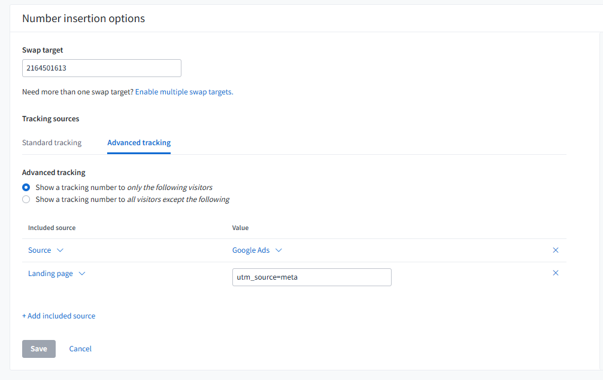
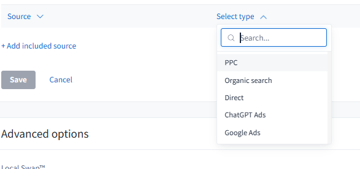
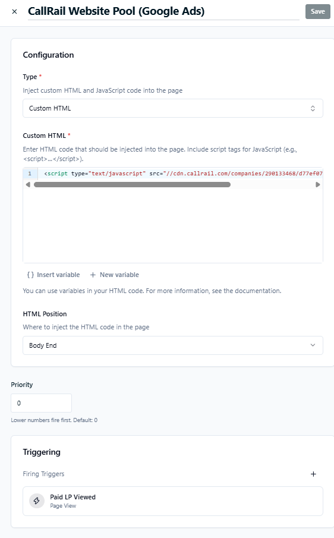
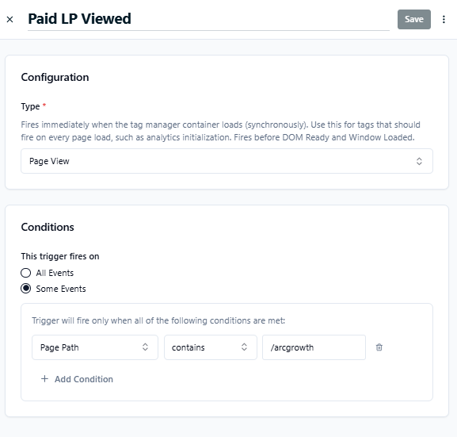

Before you start
- Open the correct clinic in CallRail. Each clinic is its own company. A pool created in one company does not work on another clinic’s website.
- Find the phone number printed on that clinic’s /arcgrowth page. The pool must swap that exact number.
- Meta ads must use this URL ending. The
utm_source=metapart is what CallRail looks for.
utm_source=meta&utm_medium=paid_social&utm_campaign={{campaign.name}}&utm_content={{adset.name}} - {{ad.name}}
1. Create the website pool
- In CallRail, click Create Number, or the + icon, then Phone Number.
- Choose the clinic.
- Where will you display this number? Choose On my website.
- Choose Calls, keywords, & web sessions. This is the website pool. Do not choose “Calls only.”
- Enter the clinic’s real phone number as the number calls should ring.
- On the source step, you can leave the default for now. You will set Google and Meta in the next section.
- Name the pool so the clinic is obvious, for example Website Pool.
- Pool size: start with 4 numbers. That is CallRail’s minimum. Use a local area code that matches the clinic.
- Turn on call recording if the clinic wants recordings. Click Activate Tracking Number.
2. Set the swap target
The swap target is the number CallRail looks for on the website and replaces.
- Go to Settings, choose the clinic, and open the website pool.
- In Number insertion options, set Swap target to the digits of the number on the
/arcgrowthpage. No spaces or dashes. Example: a page that shows 216-450-1613 uses2164501613. - If the page shows a second call number, click Enable multiple swap targets and add it. Do not add a fax number.
3. Track Google Ads and Meta
Stay in Number insertion options. Open Advanced tracking.
- Select Show a tracking number to only the following visitors.
- First row: left column Source, value Google Ads.
- Click + Add included source.
- Second row: change the left column from Source to Landing page. In the value box, type exactly
utm_source=meta. - Click Save. Reopen the pool and confirm both rows are still there.


utm_source=meta.4. Put the CallRail script on the landing page
Each clinic has its own script in CallRail. Copy it from that clinic. Pasting one clinic’s script onto another clinic’s site will not swap the number.
In CallRail: open the clinic, then the JavaScript snippet (the install code). Copy the whole <script> line.
In that same clinic’s Ours Privacy tag manager:
- Create a Custom HTML tag. A clear name is CallRail Website Pool.
- Paste only that clinic’s script.
- Set HTML position to Body End.
- Leave priority at 0.

The tag should fire on Page View, and only on the paid landing page.
- Create a trigger named Paid LP Viewed.
- Set the trigger type to Page View. CallRail’s instructions for installing the snippet through a tag manager use Page View, not DOM Ready. The script loads immediately and waits for the page itself before it swaps the number.
- Fire on Some Events.
- Condition: Page Path contains
/arcgrowth. - Attach that trigger to the CallRail tag.

5. Test both sources
Use a new private window for each test. Close other private windows first. Accept the cookie banner so the tag can run.
Google Ads
https://the-clinic-site/arcgrowth/?gclid=test
Meta
https://the-clinic-site/arcgrowth/?utm_source=meta&utm_medium=paid_social&fbclid=test
The number on the page should change from the clinic’s real number to a pool number. A link that only has ?utm_source=meta is not a valid Meta test. CallRail treats that visit as direct, and this pool does not swap for direct visitors.
swap.js. If that file never loads, the Ours tag is unpublished or the trigger did not fire. If it loads and the number stays the same, the script is from a different clinic, or the swap target does not match the number on the page.Settings to copy
| Setting | Value |
|---|---|
| Pool type | On my website → Calls, keywords, & web sessions |
| Pool size | 4 local numbers |
| Swap target | The call number printed on /arcgrowth, digits only |
| Who sees a tracking number | Only the following visitors |
| Row 1 | Source → Google Ads |
| Row 2 | Landing page → utm_source=meta |
| Website tag | That clinic’s own CallRail script, Body End |
| Trigger | Page View, page path contains /arcgrowth |